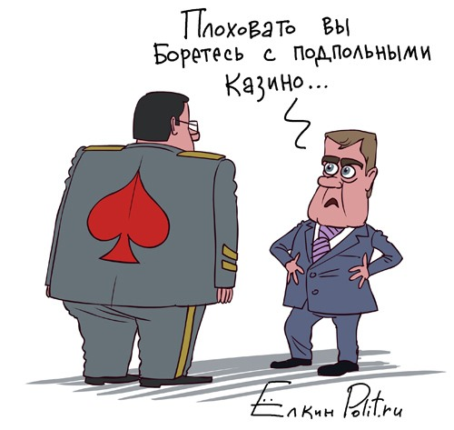

Еще в начале недели Дмитрий Анатольевич распорядился разобраться с оказавшимися вне закона казино, а уже в четверг Генеральная прокуратура предложила пути решения проблемы.
Как мы помним сам генеральный прокурор на приёме у президента расписался в беспомощности. В настоящее время, по признанию самой прокуратуры, нет специальных норм федерального законодательства, устанавливающих ответственность за нарушение требований названного Федерального закона об организации и проведении азартных игр их организаторами. С учетом этого на практике противоправные действия в зависимости от обстоятельств дела рассматривались как уголовно наказуемое незаконное предпринимательство (ст.171 УК РФ) либо административное правонарушение, предусмотренное статьей 14.1 КоАП РФ. В связи с этим принудительно лечить граждан от лудомании* прокуратуре очень тяжело.
«Во исполнение поручения Президента России Дмитрия Медведева» прокуратура представила свои предложения об изменении законодательства, касающегося игорного бизнеса.
Согласно проекту документа планируется принять поправки к кодексу об административных правонарушениях.
КоАП предлагается дополнить статьёй 2411 в частности следующего содержания:
…2. Организация азартных игр с использованием сети Интернет, других информационно-телекоммуникационных сетей либо средств связи – влечет наложение административного штрафа на физических лиц в размере от двух тысяч до двух тысяч пятисот рублей; на должностных лиц в размере от четырех тысяч рублей до двадцати тысяч рублей; на юридических лиц – от двухсот тысяч рублей до пятисот тысяч рублей»;…
Таким образом заинтересованному в дополнительном заработке работнику полиции становится доступной следующая схема для заработка.
Просим знакомого зайти в интернет-салон (вполне безобидный интернет-салон). Знакомый покупает полчаса доступа, открывает любой сайт с азартными играми и начинает игру. Следом заходит господин полицейский. Громко говорит о нарушениях закона и о штрафе до 500 тыщ. Profit!

Ссылки по теме:
Ранее по теме
* Лудомания — патологическая склонность к азартным играм.